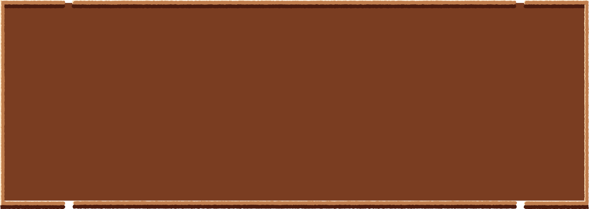

<!DOCTYPE html>
<html lang="en">
<head>
    <meta charset="UTF-8">
    <meta name="viewport" content="width=device-width, initial-scale=1.0">
    <title>SIMETRI Footer</title>
    <script src="https://cdn.tailwindcss.com"></script>
    <link rel="stylesheet" href="styles.css">
</head>

<body class="m-0 p-0">

<footer
    class="relative w-full min-h-[650px] md:min-h-[720px] px-[35px] md:px-[80px] pt-[70px] pb-[50px] box-border overflow-hidden text-[#e7b77f]"
    style="background-image:url('images/footer/bg-footer.png'); background-size:cover; background-position:center;"
>

    <picture>
        <source media="(max-width:768px)" srcset="images/footer/frame-footer-mobile.png">
        
    </picture>

    <div class="relative z-[2] flex flex-col items-center pt-[35px] md:flex-row md:items-start md:justify-center md:gap-[100px] md:pt-[150px]">

        <nav class="flex flex-col items-center gap-[12px] pt-[10px] translate-x-[0px] md:items-start md:pt-[35px] md:translate-x-[130px]">
            <a href="#" class="no-underline text-[#e7b77f] text-[24px] font-semibold tracking-[0.3px] hover:opacity-60 md:text-[27px]" style="font-family:'The Wild Breath of Zelda',serif;">Home</a>
            <a href="#" class="no-underline text-[#e7b77f] text-[24px] font-semibold tracking-[0.3px] hover:opacity-60 md:text-[27px]" style="font-family:'The Wild Breath of Zelda',serif;">Tema</a>
            <a href="#" class="no-underline text-[#e7b77f] text-[24px] font-semibold tracking-[0.3px] hover:opacity-60 md:text-[27px]" style="font-family:'The Wild Breath of Zelda',serif;">Materi</a>
            <a href="#" class="no-underline text-[#e7b77f] text-[24px] font-semibold tracking-[0.3px] hover:opacity-60 md:text-[27px]" style="font-family:'The Wild Breath of Zelda',serif;">Asik</a>
        </nav>

        <div class="w-full max-w-[320px] text-center mt-[45px] md:max-w-[500px] md:mt-0 md:translate-x-[20px]">

            <h3
                class="m-0 mb-[10px] text-[#f0c28a] text-[22px] font-bold md:text-[24px]"
                style="font-family:'Baskerville Old Face',Baskerville,'Times New Roman',serif;"
            >
                Didukung Oleh
            </h3>

            <div class="grid grid-cols-4 items-center justify-items-center gap-x-0 gap-y-[2px] max-w-[300px] mx-auto md:flex md:flex-wrap md:items-center md:justify-center md:gap-x-[22px] md:gap-y-[18px] md:max-w-[500px]">

                

                

                

                

                

                

                

                

            </div>

            <p
                class="m-0 mt-[45px] text-[#e7b77f] text-[14px] font-bold leading-[1.4] md:text-[17px]"
                style="font-family:'Baskerville Old Face',Baskerville,'Times New Roman',serif;"
            >
                © SIMETRI HMSI ITS
            </p>

        </div>
    </div>

</footer>

</body>
</html>